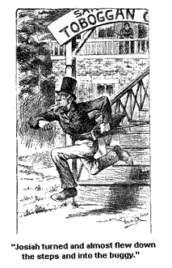
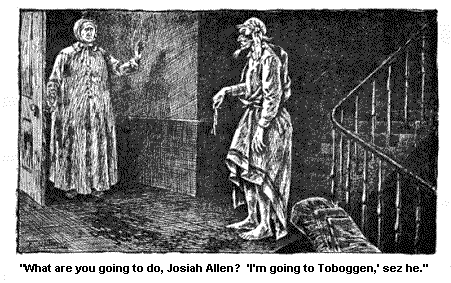
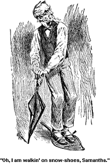

VISITS TO NOTABLE PLACES.
It is a perfect sight to behold, to set on the piazzas at Saratoga, and see the folks a goin' past.
Now in Jonesville, when there wuz a 4th of July, or campmeetin', or sunthin' of that kind a goin' on, why, I thought I had seen the streets pretty full. Why, I had counted as many as seven teams in the road at one time, and I had thought that wuz pretty lively times. But good land? Good land! You would have gin up in ten minutes time here, that you had never seen a team (as it were).
Why I call my head a pretty sound one, but I declare, it did fairly make my head swim to set there kinder late in the afternoon, and see the drivin' a goin' on. See the carriages a goin' this way, and a goin' that way; horses of all colers, and men and wimmen of all colers, and parasols of all colers, and hats, and bonnets and parasols, and satins, and laces, and ribbins, and buttons, and dogs, and flowers, and plumes, and parasols. And horses a turnin' out to go by, and horses havin' gone by, and horses that hadn't gone by. And big carriages with folks inside all dressed up in every coler of the rain beaux. And elligent gentlemen dressed perfectly splendid, a settin' up straight behind. With thin yellow legs, or stripes down the side on 'em, and their hats all trimmed off with ornaments and buttons up and down their backs.
Haughty creeters they wuz, I make no doubt. They showed it in their looks. But I never loved so much dress in a man. And I would jest as soon have told them so; as to tell you. I hain't one to say things to a man's back that I won't say to his face, whether it be a plain back or buttoned.
Wall, as I say, it wuz a dizzy sight to set there on them piazzas and see the seemin'ly endless crowd a goin' by; back and forth, back and forth; to and fro, to and fro. I didn't enjoy it so much as some did, though for a few minutes at a time I looked upon it as a sort of a recreation, some like a circus, only more wilder.
But some folks enjoyed it dretfully. Yes, they set a great deal on piazzas at Saratoga. And when I say set on 'em, I mean they set a great store on 'em, and they set on 'em a great deal. Some folks set on 'em so much, that I called them setters. Real likely creeters they are too, some on 'em, and handsome; some pious, sober ones, some sort a gay. Some not married at all, and some married a good deal, and when I say a good deal I meen, they have had various companions and lost 'em.
Now there wuz one woman that I liked quite well.
She had had 4 husbands countin' in the present one. She wuz a good lookin' woman and had seen trouble. It stands to reeson she had with 4 husbands. Good land!
She showed me one day a ring she wore. She had took the weddin' rings of her 4 pardners and had 'em all run together, and the initials of their first names carved inside on it. Her first husband's name wuz Franklin, her next two wuz Orville and Obed, and her last and livin' one Lyman. Wall, she meant well, but she never see what would be the end on't and how it would read till she had got their initials all carved out on it.
She wuz dretfully worked up about it, but I see that it wuz right. For nobody but a fool would want to run all these recollections and memories together, all the different essociations and emotions, that must cluster round each of them rings. The idee of runnin' 'em all together with the livin' one! It wuz ectin' like a fool and it seemed fairly providential that their names run in jest that way.
Why, if I had had 2 husbands, or even 4, I should want to keep 'em apart - settin' up in high chairs on different sides of my heart. Why, if I'd had 4, I'd have 'em to the different pints of the compass, east, west, north, south, as far apart from each other as my heart would admit of. Ketch me a lumpin' in all the precious memories of my Josiah with them of any other man, bond or free, Jew or Genteel; no, and I'd refrain from tellin' to the new one about the other ones.
No, when a pardner dies and you set out to take another one, bury the one that has gone right under his own high chair in your heart, don't keep him up there a rattlin' his bones before the eyes of the 2d, and angerin' him, and agonizen' your own heart. Bury him before you bring a new one into the same room.
And never! never! even in moments of the greatest anger, dig him up agin or even weep over his grave, before the new pardner. No; under the moonlight, and the stars, before God only, and your own soul, you may lay there in spirit on that grave, weep over it, keep the turf green. But not before any one else. And I wouldn't advise you to go there alone any too often. I would advise you to spend your spare time ornementin' the high chair where the new one sets, wreathin' it round with whatever blossoms and trailin' vines of tenderness and romance you have left over from the first great romance of life.
It would be better for you in the end.
I said some few of these little thoughts to the female mentioned; and I s'pose I impressed her dretfully, I s'pose I did. But I couldn't stay to see the full effects on't, for another female setter came up at that minute to talk with her, and my companion came up at that very minute to ask me to go a walkin' with him up to the cemetery.
That is a very favorite place for Josiah Allen. He often used to tell the children when they wuz little, that if they wuz real good he would take 'em out on a walk to the grave-yard.
And when I first married to him, if I hadn't broke it up, that would
have been the only place of resort that he would have took me to Summers.
But I broke it up after a while. Good land! there is times to go
any where and times to stay away. I didn't
want to go a trailin' up there every day or two; jest married too!
But to-day I felt willin' to go. I had been a lookin' so long at the crowd a fillin' the streets full, and every one on 'em in motion, that I thought it would be sort a restful to go out to a place where they wuz still. And so after a short walk we came to the village that haint stirred by any commotion or alarm. Where the houses are roofed with green grass and daisies, and the white stun doors don't open to let in trouble or joy, and where the inhabitants don't ride out in the afternoon.
Wall, if I should tell the truth which I am fur from not wantin' to do, I should say that at first sight, it wuz rather of a bleak, lonesome lookin' spot, kinder wild and desolate lookin'. But as we went further along in it, we came to some little nooks and sheltered paths and spots, that seemed more collected together and pleasant. There wuz some big high stuns and monuments, and some little ones but not one so low that it hadn't cast a high, dark shadow over somebody's life.
There wuz one in the shape of a big see shell. I s'pose some mariner lay under that, who loved the sea. Or mebby it wuz put up by some one who had the odd fancy that put a shell to your ear you will hear a whisperin' in it of a land fur away, fur away. Not fur from this wuz a stun put up over a young engineer who had been killed instantly by his engine. There wuz a picture of the locomotive scraped out on the stun, and in the cab of the engine wuz his photograph, and these lines wuz underneath:
My engine now lies still and cold,
No water does her boiler hold;
The wood supplies its flames no more,
My days of usefulness are o'er.
We wended our way in and out of the silent streets for quite a spell, and then we went and sot down on the broad piazza of the sort of chapel and green-house that stood not fur from the entrance. And while we sot there we see another inhabitent come there to the village to stay.
It wuz a long procession, fur it wuz a good man who had come. And many of his friends come with him jest as fur as they could: wife, children, and friends, they come with him jest as fur as they could, and then he had to leave 'em and go on alone. How weak love is, and how strong. It wuz too weak to hold him back, or go with him, though they would fain have done so. But it wuz strong enough to shadow the hull world with its blackness, blot out the sun and the stars, and scale the very mounts of heaven with its wild complaints and pleadin's. A strange thing love is, haint it?
Wall, we sot there for quite a spell and my companion wantin', I spose, to make me happy, took out a daily paper out of his pocket and went to readin' the deaths to me. He always loves to read the deaths and marriages in a paper. He sez that is the literature that interests him. And then I s'pose he thought at such a time, it wuz highly appropriate. So I didn't break it up till he began to read a long obituary piece about a child's death; about its being cut down like a flower by a lightin' stroke out of a cloudless sky, and about what a mysterious dispensation of Providence it wuz, etc., etc. And then there wuz a hull string of poetry dedicated to the heart-broken mother bewailin' the mystery on't, and wonderin' why Providence should do such strange, onlookedfor things, etc., and etcetery, and so 4th.
And I spoke right up and sez, "That is a slander onto Providence and ort to be took as such by every lover of justice."
Josiah wuz real horrified, he had been almost sheddin' tears he wuz so affected by it; to think the little creeter should be torn away by a strange chance of Providence from a mother who worshipped her, and whose whole life and every thought wuz jest wrapped up in the child, and who never had thought nor cared for anything else only just the well bein' of the child and wardin' trouble off of her, for so the piece stated. And he sez in wild amaze, "What do you mean, Samantha? What makes you talk so?"
"Because," sez I, "I know it is the truth. I know the hull story;" and then I went on and told it to him, and he agreed with me and felt jest as I did.
You see, the mother of the child wuz a perfect high flyer of fashion and she always wore dresses so tight, that she couldn't get her hands up to her head to save her life, after her corset wuz on. Wall, she wuz out a walkin' with the child one day, or rather toddlin' along with it, on her high-heeled sboes. They wuz both dressed up perfectly beautiful, and made a most splendid show. Wall, they went into a store on their way to the park, and there wuz a big crowd there, and the mother and the little girl got into the very middle of the crowd. They say there wuz some new storks for sale that day, and some cattail flags, and so there wuz naturelly a big crowd of wimmen a buyin' 'em, and cranes. And some way, while they stood there a heavy vase that stood up over the child's head fell down and fell onto it, and hurt the child so, that it died from the effects of it.
The mother see the vase when it flrst begun to move, she could have reached up her hands and stiddied it, and kep' it from fallin', if she could have got 'em up, but with that corset on, the hull American continent might have tumbled onto the child's head and she couldn't have moved her arms up to keep it off; couldn't have lifted her arms up over the child's head to save her life. No, she couldn't have kep' one of the States off, nor nothin'. And then talk about her wardin' trouble offen the child, why she couldn't ward trouble off, nor nothin' else with that corset on. She screemed, as she see it a comin' down onto the head of her beloved little child, but that wuz all she could do. The child wuz wedged in by the throng of folks and couldn't stir, and they wuz all engrossed in their own business which wuz pressin', and very important, a buyin' plates, and plaks, with bull-rushes, and cranes, and storks on 'em, so naturelly, they didn't mind what wuz a goin' on round 'em. And down it come!
And there it wuz put down in the paper, "A mysterious dispensation of Providence." Providence slandered shamefully and I will say so with my last breath.
What are mothers made for if it haint to take care of the little ones God gives 'em. What right have they to contoggle themselves up in a way that they can see their children die before 'em, and they not able to put out a hand to save 'em. Why, a savage mother is better than this, a heathen one. And if I had my way, there would be a hull shipload of savages and heathens brought over here to teach and reform our too civilized wimmen. I'd bring 'em over this very summer.
Wall, we sot there on the stoop for quite a spell and then we wended our way down to the highway, and as we arrived there my companion proposed that we should take a carriage and go to the Toboggen slide. Sez I, "Not after where we have been today, Josiah Allen."
And he sez, "Why not?"
And I sez, "It wouldn't look well, after visitin' the folks we have jest now."
"Wall," sez he, "they won't speak on't to anybody, if that is what you are afraid on, or sense it themselves."
And I see in a minute, he had some sense on his side, though his words shocked me some at first, kinder jarred aginst some sensitive spot in my nater, jest as pardners will sometimes, however devoted they may be to each other. Yet I see he wuz in the right on't.
They wouldn't sense anything about it. And as for us, we wuz in the world of the livin' still, and I still owed a livin' duty to my companion, to make him as happy as possible. And so I sez, mildly, "Wall, I don't know as there is anything wrong in slidin' down hill, Josiah. I s'pose I can go with you."
"No," sez he, "there haint nothin' wrong about slidin' down hill unless you strike too hard, or tip over, or sunthin'." So he bagoned to a carriage that wuz passin', and we got into it, and sot sail for the Toboggen slide.
We passed through the village. (Some say it is a city, but if it is, it is a modest, retirin' one as I ever see; perfectly unassumin', and don't put on a air, not one.)
But howsumever, we passed through it, through the rows and rows of summer tarvens and boardin' houses, good-lookin' ones too; past some good-lookin' private houses -- a long tarven and a pretty red brick studio and rows of summer stores, little nests that are filled up summers, and empty winters, then by some more of them monster big tarvens where some of the 200,000 summer visitors who flock here summers, find a restin' place; and then by the large respectable good-lookin' stores and shops of the natives, that stand solid, and to be depended on summer and winter; by churches and halls, and etc., and good-lookin' houses and then some splendid-lookin' houses all standin' back on their grassy lawns behind some trees, and fountains, and flower beds, etc., etc.
Better-lookin' houses, I don't want to see nor broader, handsomer streets. And pretty soon fur away to the east you could see through the trees a glimpse of a glorious landscape, a broad lovely view of hill and valley, bounded by blue mountain tops. It was a fair seen - a fair seen. To be perfectly surrounded by beauty where you, wuz, and a lookin' off onto more. There I would fain have lingered, but time and wagons roll stidily onward, and will not brook delay, nor pause for women to soar over seenery.
So we rolled onwards through still more beautiful, and quiet pictures. Pictures of quiet woods and bendin' trees, and a country road windin' tranquilly beneath, up and down gentle hills, and anon a longer one, and then at our feet stood the white walls of a convent, with 2 or 3 brothers, a strollin' along in their long black gowns, and crosses, a readin' some books.
I don't know what it wuz, what they wuz a readin' out of their books, or a readin' out of their hearts. Mebby sunthin' kinder sad and serene. Mebby it wuz sunthin' about the gay world of human happiness, and human sorrows, they had turned backs to forever. Mebby it wuz about the other world that they had sot out for through a lonesome way. Mebby it wuz "Never" they wuz a readin' about, and mebby it wuz "Forever." I don't know what it wuz. But we went by 'em, and anon, yes it wuz jest anon, for it wuz the very minute that I lifted my eyes from the Father's calm and rather sad-lookin' face, that I ketched sight on't, that I see a comin' down from the high hills to the left on us, an immense sort of a trough, or so it looked, a comin' right down through the trees, from the top of the mountain to the, bottom. And then all acrost the fields as fur, as fur as from our house way over to Miss Pixley's wuz a sort of a road, with a row of electric lights along the side on't.
We drove up to a buildin' that stood at the foot of that immense slide, or so they called it, and a female woman who wuz there told us all about it. And we went out her back door, and see way up the slide, or trough. There wuz a railin' on each side on't, and a place in the middle where she said the Toboggen came down.
And sez Josiah, "Who is the Toboggen, anyway? Is he a native of the place or a Injun? Anyway," sez he, "I'd give a dollar bill to see him a comin' down that place."
And the woman said, "A Toboggen wuz a sort of a long sled, that two or three folks could ride on, and they come down that slide with such force that they went way out acrost the fields as far as the row of lights, before it stopped."
Sez I, "Josiah Allen, did you ever see the beat on't?" Sez I, "Haint that as far as from our house to Miss Pixley's?"
"Yes," says he, "and further too. It is as far as Uncle Jim Hozzleton's."
"Wall," says I, "I believe you are in the right on't."
And sez Josiah, "How do they get back agin? Do they come in the cars, or in their own conveniences?"
"There is a sleigh to bring 'em back, but sometime they walk back," sez the woman.
"Walk back!" sez I, in deep amaze. "Do they walk from way out there, and cleer up that mountain agin?"
"Yes," sez she. "Don't you see the place at the side for 'em to draw the Toboggen up, and the little flights of steps for 'em to go up the hill?"
"Wall," sez I, in deep amaze, and auxins as ever to get information on deep subjects, "where duz the fun come in, is it in walkin' way over the plain and up the hills, or is it in comin' down?"
And she said she didn't know exactly where the fun lay, but she s'posed it wuz comin' down. Anyway, they seemed to enjoy it first rate. And she said it wuz a pretty sight to see 'em all on a bright clear night, when the sky wuz blue and full of stars, and the earth white and glistenin' underneath to see 7 or 800, all dressed up in to gayest way, suits of white blankets, gay borders and bright tasseled caps of every color, and suits of every other pretty color all trimmed with fur and embroideries, to see 'em all a laughin' and a talkin', with their cheeks and eyes bright and glowin', to see 'em a comin' down the slide like flashes of every colored light, and away out over the white glistenin' plains; and then to see the long line of happy laughin' creeters a walkin' back agin' drawin' the gay Toboggens. She said it wuz a sight worth seein'.
"Do they come down alone?" sez Josiah.
"Oh no!" sez she. "Boys and their sweethearts, men and wives, fathers and mothers and children, sometimes 4 on a Toboggan."
Sez Josiah, lookin' anamated and clever, "I'd love to take you on one on 'em, Samantha.'
"Oh no!" sez I, "I wouldn't want to be took."
But a bystander a standin' by said it wuz a sight to behold to stand up on top and start off. He said the swiftness of the motion, the brightness of the electric lights ahead, the gleam of the snow made it seem like plungin' down a dazzlin' Niagara of whiteness and glitterin' light; and some, like bein' shot out of a cannon. Why, he said they went with such lightnin' speed, that if you stood clost by the slide a waitin' to see a friend go by, you might stand so near as to touch her, but you couldn't no more see her to recognize her, than you could recognize one spoke from another in the wheel of a runaway carriage. You would jest see a red flash go by, if so be it wuz a red gown she had on. A red flash a dartin' through the air, and a disappearin' down the long glitterin' lane of light.
You could see her a goin' back, so they said, a laughin' and a jokin' with somebody, if so be she walked back, but there wuz long sleighs to carry 'em back, them and their Toboggens, if they wanted to ride, at the small expenditure of 10 cents apiece. They go, in the fastest time anybody can make till they go on the lightnin', a way in which they will go before long, I think, and Josiah duz too.
"They said there wuzn't nothin' like it. And I said, "Like as not." I believed 'em. And then the woman said, "This long room we wuz a standin' in," for we had gone back into the house, durin' our interview, this long room wuz all warm and light for 'em to come into and get warm, and she said as many as 600 in a night would come in there and have supper there.
And then she showed us the model of a Toboggen, all sculped out, with a man and a woman on it. The girl wuz ahead sort a drawin' the Toboggen, as you may say, and her lover. (I know he wuz, from his looks.) He wuz behind her, with his face right clost to her shoulder.
And I'll bet that when they started down that gleamin' slide, they felt as if they 2 wuz alone under the stars and the heavens, and wuz a glidin' down into a dazzlin' way of glory. You could see it in their faces. I liked their faces real well.
But the sight on 'em made Josiah Allen crazier'n ever to go too, and he sez, "I feel as if I must Toboggen, Samantha!"
Sez I, "Be calm! Josiah, you can't slide down hill in July."
"How do you know?" sez he, "I'm bound to enquire." And he asked the woman if they ever Toboggened in the summer.
"No, never!" sez she.
And I sez, "You see it can't be done."
"She never see it tried," sez he. "How can you tell what you can do without tryin'?" sez he lookin' shrewdly, and longingly, up the slide. I trembled, for I knew not what the next move of his would be. But I bethought me of a powerful weepon I had by me. And I sez, "The driver will ask pay for every minute we are here."

And as I sez this, Josiah turned and almost flew down the steps and into the buggy. I had skairt him. Truly I felt relieved, and sez I to myself, "What would wimmen do if it wuzn't for these little weepons they hold in their hands, to control their pardners with." I felt happy.
But the next words of Josiah knocked down all that palace of Peace, that my soul had betook herself to. Sez he, "Samantha Allen, before I leave Saratoga I shall Toboggen."
Wall, I immegetly turned the subject round and talked wildly and almost incoherently on politicks. I praised the tariff amost beyond its deserts. I brung up our foreign relations, and spoke well on 'em. I tackled revenues and taxation, and hurried him from one to the other on 'em, almost wildly, to get the idee out of his head. And I congratulated myself on havin' succeeded. Alas! how futile is our hopes, sometimes futiler than we have any idee on!
By night all thoughts of danger had left me, and I slept sweetly and peacefully. But early in the mornin' I had a strange dream. I dreamed I wuz in the woods with my head a layin' on a log, and the ground felt cold that I wuz a layin' on. And then the log gin way with me, and my head came down onto the ground. And then I slept peaceful agin, but chilly, till anon, or about that time, I beard a strange sound and I waked up with a start. It wuz in the first faint glow of mornin' twilight. But as faint as the light wuz, for the eye of love is keen, I missed my beloved pardner's head from the opposite pillow, and I riz up in wild agitation and thinkses I, "Has rapine took place here; has Josiah Allen been abducted away from me? Is he a kidnapped Josiah?"
At that fearful thought my heart begun to beat so voyalently as to almost stop my breath, and I felt I wuz growin' pale and wan, wanner, fur wanner than I had been sense I came to Saratoga. I love Josiah Allen, he is dear to me.
And I riz up feelin' that I would find that dear man and rescue him or perish in the attempt. Yes, I felt that I must perish if I did not find him. What would life be to me without him? And as I thought that thought the light of the day that wuz a breakin', looked sort of a faint to me, and sickish. And like a flash it came to me, the thought that that light seemed like the miserable dawns of wretched days without him, a pale light with no warmth or brightness in it.
But at that very minute I heard a noise outside the door, and I heard that beloved voice a sayin' in low axents the words I had so often heard him speak, words I had oft rebuked him for, but now, so weak will human love make one, now, I welcome them gladly -- they sounded exquisitely sweet to me. The words wuz, "Dumb 'em!"
And I joyfully opened the door. But oh! what a sight met my eye. There stood Josiah Allen, arrayed in a blanket he had took from our bed (that accounted for my cold feelin' in my dream). The blanket wuz white, with a gay border of red and yellow. He had fixed it onto him in a sort of a dressy way, and strapped it round the waist with my shawl strap. And he had took a bright yeller silk handkerchief of hisen, and had wrapped it round his head so's it hung down some like a cap, and he wuz a tryin' to fasten it round his forward with one of my stockin' supporters. He couldn't buckle it, and that is what called forth his exclamations. At his feet, partly upon the stairs, wuz the bolster from our bed (that accounted for the log that had gin way). And he had spread a little red shawl of mine over the top on't, and as I opened the door he wuz jest ready to embark on the bolster, he waz jest a steppin' onto it. But as he see me he paused, and I sez in low axents, "What are you a goin' to do, Josiah Allen?"
"I'm a goin' to Toboggen," sez he.

Sez I, "Do you stop at once, and come back into your room."
"No, no!" sez he firmly, and preparin' to embark on the bolster, "I am a goin' to Toboggen. And you come and go to. It is so fashionable," sez he, "such a genteel diversion."
Sez I, "Do you stop it at once, and come back to your room. Why," sez I, "the hull house will be routed up, and be up here in a minute."
"Wall," sez he, "they'll see fun if they do and fashion. I am a goin', Samantha!" and be stepped forward.
Sez I, "They'll see sunthin' else that begins with a f, but it haint fun or fashion.' And agin I sez, "Do you come back, Josiah Allen. You'll break your neck and rout up the house, and be called a fool."
"Oh no, Samantha! I must Toboggen. I must go down the slide once." And he fixed the bolster more firmly on the top stair.
"Wall," sez I, feelin' that I wuz drove to my last ambush by him, sez I, "probably five dollars won't make the expenses good, besides your doctor's bill, and my mornin'. And I shall put on the deepest of crape, Josiah Allen," sez I.
I see he wavered and I pressed the charge home. Sez I, "That bolster is thin cloth, Josiah Allen, and you'll probably have to pay now for draggin' it all over the floor. If anybody should see you with it there, that bolster would be charged in your bill. And how would it look to the neighbors to have a bolster charged in your bill? And I should treasure it, Josiah Allen, as bein' the last bill you made before you broke your neck !"
"Oh, wall," sez he, "I s'pose I can put the bolster back." But he wuz snappish, and he kep' snappish all day.
He wuzn't quelled. Though he had gin in for the time bein' I see he wuzn't quelled down. He acted dissatisfied and highheaded, and I felt worried in my mind, not knowin' what his next move would be.
Oh! the tribulations it makes a woman to take care of a man. But then it pays. After all, in the deepest of my tribulations I feel, I do the most of the time feel, that it pays. When he is good he is dretful good.
Wall, I went over to see Polly Pixley the next night, and when I got back to my room, there stood Josiah Allen with both of his feet sort a bandaged and tied down onto sumthin', which I didn't at first recognize. It waz big and sort a egg shaped, and open worked, and both his feet wuz strapped down tight onto it, and he wuz a pushin' himself round the room with his umberell.
And I sez, "What is the matter now, Josiah Allen; what are you a doin' now?"
"Oh I am a walkin' on snow-shoes, Samantha! But I don't see," sez he a stoppin' to rest, for he seemed tuckered out, "I don't see how the savages got round as they did and performed such journeys. You put 'em on, Samantha," sez he, "and see if you can get on any faster in 'em."

Sez I, coldly, "The savages probable did'nt have both feet on one shoe, Josiah Allen, as you have. I shall put on no snowshoes in the middle of July; but if I did, I should put 'em on accordin' to a little mite of sense. I should try to use as much sense as a savage any way."
"Why, how it would look to have one foot on that great big snow-shoe. I always did like a good close fit in my shoes. And you see I have room enough and to spare for both on 'em on this. Why it wouldn't look dressy at all, Samantha, to put 'em on as you say."
Sez I very coldly, "I don't see anything over and above dressy in your looks now, Josiah Allen, with both of your feet tied down onto that one shoe, and you a tryin' to move off when you can't. I can't see anything over and above ornamental in it, Josiah Allen."
"Oh! you are never willin' to give in that I look dressy, Samantha. But I s'pose I can put my feet where you say. You are so sot, but they are too big for me -- I shall look like a fool."
I looked at him calmly over my specks, and sez I, "I guess I sha'n't notice the difference or realize the change. I wonder," sez I, in middlin' cold axents, "how you think you are a lookin' now, Josiah Allen."
"Oh! keep a naggin' at me!" sez he. But I see he wuz a gittin' kinder sick of the idee.
"What you mean by puttin' 'em on at all is more than I can say," sez I, "a tryin to walk on snowshoes right in dog-days."
"I put 'em on," Samantha, sez he, a beginnin' to unstrap 'em, "I put 'em on because I wanted to feel like a savage."
"Wall," sez I, "I have seen you at times durin' the last 20 years, when I thought you realized how they felt without snow-shoes on, either."
(These little interchanges of confidence will take place in every-day life.) But at that very minute Ardelia Tutt rapped at the door, and Josiah hustled them snow-shoes into the closet, and that wuz the last trial I had with him about 'em. He had borrowed 'em.
Wall, Ardelia wuz dretful pensive, and soft actin' that night, she seemed
real tickled to see us, and to get where we wuz. She haint over and
above suited with the boardin' place where she is, I think. I don't
believe they have very good food, though she won't complain, bein' as they
are relations on her own side. And then she is sech a good little
creeter anyway. But I had my suspicions. She didn't seem very
happy. She said she had been down to the park that afternoon, she
and the young chap that has been a payin' her so much attention lately,
Bial Flamburg. She said they had sot down there by the deer park
most all the afternoon a watchin' the deer. She spoke dretful well
of the deer. And they are likely deer for anything I know.
But she seemed sort a pensive and low spirited. Mebby she is a beginnin'
to find Bial Flamburg out. Mebby she is a beginnin' to not like his
ways. He drinks and smokes, that I know, and I've mistrusted worse
things on him.